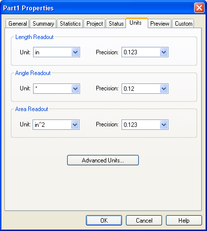
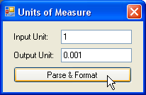

Overview
In the interactive environment, Solid Edge allows you to specify the length, angle, and area units to use when placing, modifying, and measuring geometry. For example, you can specify millimeters as the default length unit of measurement; you can also specify the degree of precision of the readout. You specify these properties on the Units and Advanced Units tabs of the Properties dialog box. (On the File menu, click Properties to display the dialog box.)

This is strictly a manipulation of the display of the precision; internally all measurements are stored at their full precision.
With a Length Readout precision of 0.12, the length of any linear measurement is displayed as follows:
Because millimeters are the default units in this example, whenever distance units are entered, they have to be in millimeters. If a user enters a distance value in inches, for example, the units are automatically converted to millimeters.
converts to
The units system in Solid Edge allows users to specify the default units and to control how values are displayed for each of the units. Users can change the default units and their display at any time and as often as necessary.
You can customize Solid Edge so that your commands behave in a similar way. For example, suppose you are creating a program to place hexagons. The program displays a dialog box that allows you to enter the size of the hexagon and then creates the hexagon at a location specified by a mouse click. When users enter the size of the hexagon, they should be able to enter the value in the user-specified default unit. Also, users should be able to override the default unit and specify any linear unit. The program will need to handle any valid unit input.
Internal Units
| Unit Type |
Internal Units |
| Distance |
Meter |
| Angle |
Radian |
| Mass |
Kilogram |
| Time |
Second |
| Temperature |
Kelvin |
| Charge |
Ampere |
| Luminous Intensity |
Candela |
| Amount of Substance |
Mole |
| Solid Angle |
Steradian |
All other units are derived from these. All calculations and geometry placements use these internal units. When values are displayed to the user, the value is converted from the internal unit to the user-specified unit.
When automating Solid Edge, first convert user input to internal units. Calculations and geometric placements use the internal units. When displaying units, you must convert from internal units to default units. The UnitsOfMeasure object handles these conversions.
Working with Units of Measure
The UnitsofMeasure object provides two methods: ParseUnit and FormatUnit. In addition, a set of constants is provided to use as arguments in the methods. The ParseUnit method uses any valid unit string to return the corresponding database units. The FormatUnit method uses a value in database units to return a string in the user-specified unit type, such as igUnitDistance, igUnitAngle, and so forth. The units (meters, inches, and so forth) and precision are controlled by the active units for the document.
The following programs uses both the ParseUnit and FormatUnit methods to duplicate the behavior of unit fields in Solid Edge. The code also checks whether the input is a valid unit key-in and outputs the correctly formatted string according to the user-specified setting.
Error handling is used to determine if a valid unit has been entered. The Text property from the text field is used as input to the ParseUnit method, and the unit is a distance unit. If the ParseUnit method generates an error, focus is returned to the text field, and an error is displayed, giving the user a chance to correct the input. This cycle continues until the user enters a correct unit value. If the key-in is valid, then the database value is converted into a unit string and displayed in the text field.

Code Sample
See Also